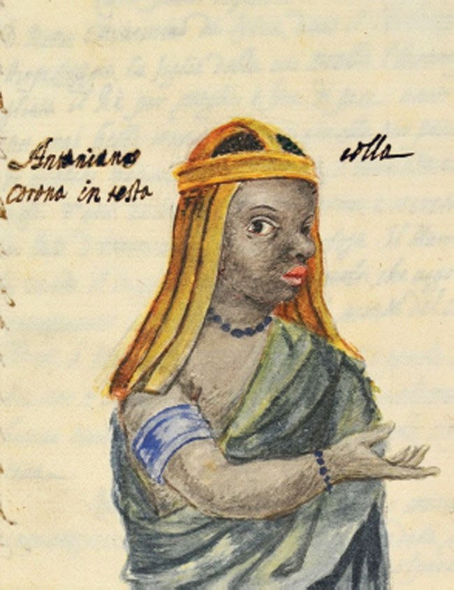

THE UNWRITTEN MARK
She does not break chains — she opens the door, and the bound must choose to walk through it.

THE UNWRITTEN MARK
She does not break chains — she opens the door, and the bound must choose to walk through it.
Feature map
Level-by-level features, as the figure refined them.
The Witness
bonus action, 1 CE
Tier IV · Support (Liberator) · Suggested CE ability: WIS · Primary verb: Release. Technique DC = 8 + proficiency bonus + WIS modifier. The Door opens only for the willing — the target must choose freedom. This is the willing-decline valve, built into the foundation. Kimpa Vita never erases consequences: if an ended binding was a vow with a stated price, Heaven's price falls where the vow says it falls.
For 1 minute, Kimpa Vita perceives bindings — charms, compulsions, curses, geas, and vow-marks — on any creature she can see within 60 ft, as well as the general shape of each binding's price. The witness sees the chains.
The Opened Door
action, 3 CE
She touches a willing creature and unwrites one binding: ends one charmed or frightened condition, or one curse, geas, or compulsion effect on the target — the target must declare its choice of freedom. If the binding was a vow with a stated price, the price falls where the vow says it falls (GM adjudicates; usually the freed creature). She opens the door. She does not pay the toll. At any site of unbinding — Evululu, the ruins of São Salvador, the ports of the old trade — her Door reaches 60 ft, the price-sharing (see L3) costs 1 CE, and she has advantage on Wisdom checks: the land testifies.
The Price Falls Where It Falls
reaction, 3 CE
When a creature she released suffers the vow-price, Kimpa Vita may take up to half of the damage herself — voluntarily, no save; for non-damaging vow-prices, the GM splits the duration or penalty (invented). Tender, and terrible.
The Names Begin
passive
She keeps the roll of the Antonian dead. Once per long rest, she may speak a name aloud as a bonus action: one willing creature within 60 ft gains advantage on saves against charm and compulsion for 1 hour. The remembered stand with the living.
Sanctuary of the Ruins
action, 4 CE, concentration, 1 minute
A 30-ft aura — the ruins of São Salvador, remembered. Willing creatures in the aura have advantage on saves against being charmed, frightened, or compelled; and The Opened Door becomes a bonus action while the aura holds. The sanctuary keeps the door close.
The Antonian Memory
action, 6 CE, once per long rest
She calls the names. Up to PB willing creatures within 60 ft are each released from one binding (as The Opened Door), gain temporary HP equal to her WIS modifier + PB, and gain advantage on saves against charm and compulsion for 1 hour. The dead, remembered, stand with the living.
Maximum, Domain, or equivalent.
Capstone material.
Maximum: THE BURNING (action, 10 CE, once per long rest)
For 1 minute, The Opened Door costs no CE, its range becomes 60 ft, and her price-sharing (L3) may absorb the whole price. The fire that could not hold her, turned outward: every door, open, at once.
Domain Expansion: THE SAINT'S POSSESSION (full-turn action, 20 CE)
60-ft enclosed Domain. 800 clash points · 5-round burnout · 2-minute duration (per zack's Tier IV bookkeeping). - Sure-hit (allies): every willing creature in the Domain is released from all bindings (willing only; prices fall where the vows say); for the Domain's duration, willing creatures cannot gain the charmed condition and cannot be compelled. - Sure-hit (enemies): the door stands open — each enemy may, as a free action on its turn, choose to be released from one binding affecting it (the valve, Domain-wide; enemies may decline freely and suffer no penalty). No new charm or compulsion effects can be imposed on anyone inside the Domain — the Domain refuses new chains. The possession, perfected: every chain in the Domain, openable — by choice, and only by choice.
- Clash points
- 800
- Burnout
- 5 rounds
- Duration
- 2 minutes
- Radius
- 60-ft enclosed Domain
- Activation ✦
- full-turn action
- CE cost ✦
- 20
✦ Canon: figure Domains are Specific Domains — the stated profile governs, not the player point-unlock table.
THE FIRE REMEMBERS (passive)
Once per long rest, when reduced to 0 HP, Kimpa Vita is not felled but transfigured until the end of her next turn: released from all bindings, restored to half her HP maximum, and every willing creature within 60 ft is released from one binding. The stake could not hold her. Nothing else will.
Build-defining options.
This technique grants Innate Technique Feats — hand-authored applications of the figure's art, available in the builder's feat picker when you select this technique.
Edge cases and shared systems.
Campaign canon notes